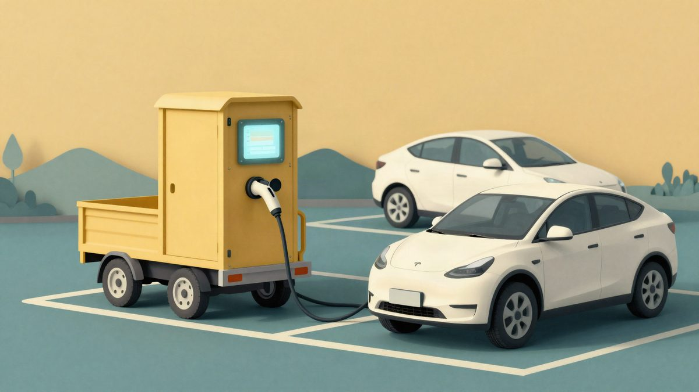
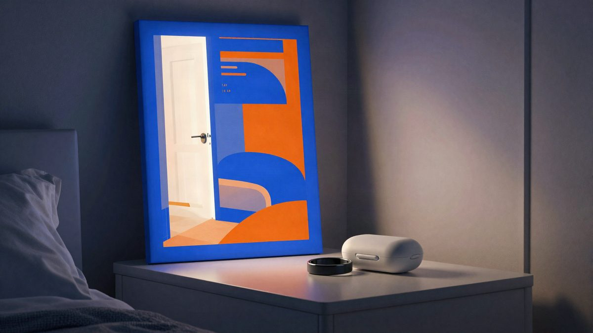

BYD, Chery i Geely ulaze u utrku u brzom punjenju: do 500 km dometa u pet minuta

Kineski proizvođači električnih automobila natječu se tko će brže puniti baterije. BYD, Chery i Geely navode da se baterija s 10 na 70 posto puni za četiri i pol do pet minuta, a Chery tvrdi da dodaje 500 km dometa u pet minuta. Nova rješenja trebala bi stići 2026. i 2027., a cijene i dostupnost u Europi još nisu poznate.
Kineski proizvođači automobila sad se više bave brzinom punjenja nego dometom i kapacitetom baterije. BYD, Chery i Geely tvrde da njihove nove tehnologije za pet minuta dodaju stotine kilometara dometa, a više takvih rješenja trebalo bi se postupno uvoditi od 2026. do 2027.
BYD je još 2025. podigao brzinu punjenja baterija na razinu 10C i postavio cilj od 400 km dometa u pet minuta. Druga generacija Blade baterije, s kemijom litij-željezo-fosfat, trebala bi se puniti s 10 na 70 posto za pet minuta.
Chery je predstavio tehnologiju Xunlong s vršnom snagom od 1,44 MW i tvrdi da ona za pet minuta dodaje 500 km dometa. Sustav povezuje solarne panele, spremnike energije i superbrze punjače, a umjetna inteligencija usklađuje učinkovitost punjenja i opterećenje mreže. Chery do kraja godine planira pilot-projekte u više gradova, a do 2029. želi izgraditi 20.000 postaja za brzo punjenje.
Geely kombinira sustav AI Smart Charging s baterijom od 12C. Najbrže punjenje s 10 na 70 posto traje četiri i pol minute. Sustav unaprijed predviđa potrebe i regulira temperaturu, pa bi uz brzo punjenje trebao produljiti i vijek trajanja baterije. Slična rješenja razvijaju i Li Auto, CATL i Sunwoda.
Razlike između vrsta punjenja
Kućno izmjenično punjenje ima malu snagu i za većinu baterija treba nekoliko sati. Javno istosmjerno brzo punjenje danas je standard za većinu modela. Superpunjenje na 800 V platformi skraćuje vrijeme na desetak minuta, a megavatno punjenje prelazi 1.000 kW i cilja na iskustvo slično točenju goriva.
Utječe li brzo punjenje na bateriju
Vlasnici se često boje da brzo punjenje brzo troši bateriju. Prema procjeni iz izvora, punjenje u skladu s projektiranim standardima trošenje ubrzava samo blago. Štetnije su navike poput punjenja velikom snagom na ekstremno niskim ili visokim temperaturama, punjenja tek kad je baterija potpuno prazna i dugog držanja vršne snage. Sustavi s AI upravljanjem u stvarnom vremenu prate stanje baterije i prilagođavaju snagu.
Prepreke
Masovnu primjenu usporava infrastruktura. Megavatni punjači jako ovise o spremnicima energije na postajama. Kad se za blagdane puni mnogo vozila istovremeno, spremnici se ne stignu nadopuniti pa snaga punjenja automatski pada. Dodatni problemi su odobrenja za priključak na mrežu, troškovi izgradnje postaja i tehnologija vozila koja napreduje brže od infrastrukture.
Izvor: MyDrivers (快科技)
Povezani članci

Allye iz starih baterija električnih auta gradi punjač od 400 kW koji ne zahtijeva nadogradnju mreže9. studenoga 2026.
ISHO Ring Pro je pokazao uzrok lošeg sna: u zatvorenoj spavaćoj sobi CO2 prelazi 1000 ppm7. studenoga 2026. Moždani implantat vratio govor pacijentima s ALS-om: razumljivost do 94 posto, jedna pacijentica ponovno pjeva15. studenoga 2026.
Moždani implantat vratio govor pacijentima s ALS-om: razumljivost do 94 posto, jedna pacijentica ponovno pjeva15. studenoga 2026.